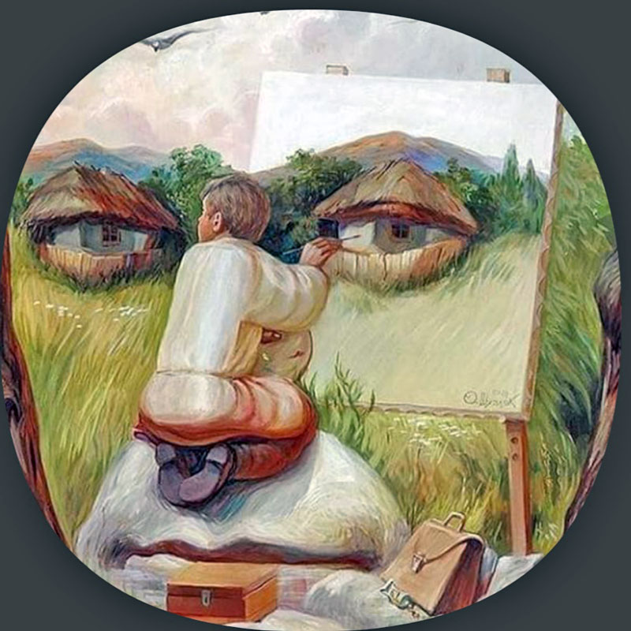

The story of Ancient greek: what do we learn?
Ancient Greece.
Story is tailed by an ancient book from Greece, the story begins with a Prophecy to the King, By the oracle of Apollo, on how a king’s son will kill his father and marry his mother. 
By then the King’s wife was Pregnant, and the oracle’s prophecy was that the child will be born and in his adulthood, the child will kill his father and marry his Mother.
When the child was born, the parents decided to throw him to the wildness so he may die and the prophecy may not com to pass. Unknown to them, the child was picked up by an old man, the child grew in morphology and age, and in his adulthood he heard about the story,
After he heard the story, he started to run to his father, on the the way he met an old man, because of hanger he killed an old man, little did he know that, that was his father, the King. After some days, he went to a King’s palace and he found wise mes solving riddles.
Riddle
Was the Greece tradition in order to make your city/country noble, then you must have wise men/people of knowledge. And they knew the wisdom of the people through intelligence to solve riddles. So when he arrived at King’s palace he served as many riddles as they were, because he was a brilliant and related to King’s blood, he could be as wise as the King. So he served the city by solving riddles.

After he served the city, the price was that whoever wins the challenge will marry the Queen, little did he know that, that was his Mother, the dead King’s wife. And in his oath he declared, whoever I find out what or who killed the King, will be exile from the land. Then the Oracles said that he was the one who had committed a crime. So he was exiled from the land, and the lesson of the age was made at a day of his depart…….
Comentator’s remarks
Moral of the story.
“Be hold the sons and daughters of Greece, this was Phidias the brave man, the greatest of all men, He was envied by all men, be hold the sons and daughters of Greece, that a motto man must always look to his ending and none can be called successful until his successor succeed.”
Related Posts: